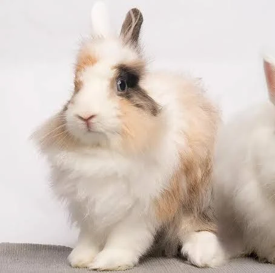

Angora to jedna z najstarszych i najbardziej rozpoznawalnych ras królików domowych. Jej znakiem rozpoznawczym jest niezwykle długa, gęsta i miękka sierść, która sprawia, że zwierzę przypomina puszystą kulkę. To królik o wyjątkowej urodzie, który wymaga jednak regularnej i troskliwej pielęgnacji. Najważniejsze cechy rasy: Wygląd: Całe ciało (w tym uszy i pyszczek) pokryte jest obfitym, wełnistym futrem. Waga: Zazwyczaj osiąga od 2 do 5 kg (w zależności od odmiany angory). Charakter: Spokojne, łagodne i bardzo przyjacielskie zwierzęta, które szybko przywiązują się do opiekuna. Pielęgnacja: Bardzo wymagająca – konieczne jest codzienne, dokładne szczotkowanie, aby zapobiec kołtunieniu futra.